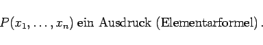

Allgemein werden die Ausdrücke des Prädikatenkalküls wieder induktiv definiert:
Sind Individuenvariable und P eine n-stellige Prädikatenvariable, so ist

(5.21a)
Sind A und B Ausdrücke, so sind es auch
(5.21b)
Betrachtet man Aussagenvariable als nullstellige Prädikatenvariable, so erkennt man die Aussagenlogik als Teil der Prädikatenlogik. Eine Individuenvariable x kommt in einem Ausdruck gebunden vor, wenn x Variable eines Quantors ist oder im Wirkungsbereich eines Quantors liegt; andernfalls kommt x in diesem Ausdruck frei vor. Ein Ausdruck der Prädikatenlogik, der keine freien Variablen enthält, heißt geschlossene Formel.